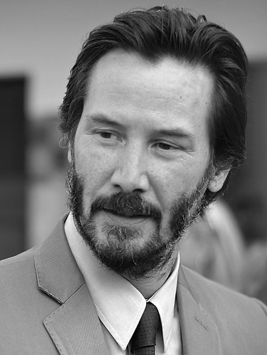

Keanu Charles Reeves
Keanu Charles Reevesis a Canadian actor, musician, film producer and director. Born in Beirut, Lebanon, Reeves grew up in Toronto, Canada. He began acting in theatre productions, and in television films before making his mainstream film debut in Youngblood (1986). Reeves gained recognition in his breakthrough role as Ted "Theodore" Logan in the science fiction comedy Bill & Ted's Excellent Adventure (1989). This was followed by a supporting role in Ron Howard's comedy Parenthood, 1991's Point Break, a sequel, Bill & Ted's Bogus Journey, and the independent drama My Own Private Idaho where playing a street hustler received critical praise for his performance. He had a supporting role in Bram Stoker's Dracula (1992), which was nominated for four Academy Awards.
In 2016, The Hollywood Reporter calculated that Reeves had earned $250 million from The Matrix franchise, making him one of the highest paid actors. In 2005, Reeves received a star on the Hollywood Walk of Fame in recognition for his work in film.